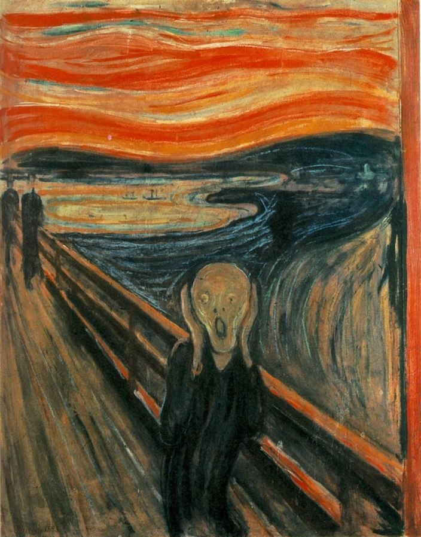
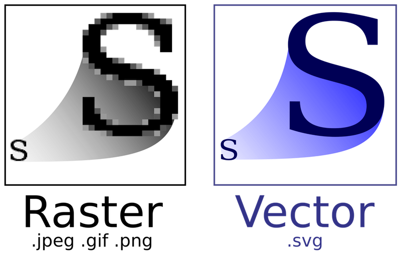

Formato de imágenes
Volver a página principalLas imágenes que vemos en internet, detrás de ese contenido, están en una forma, es decir, con un estándar en el que se guarda esa información. La cual, en general, es un mapa de bits formado por ceros y unos que definen cada bit en cuanto a color e intensidad. Para ello, existen diferentes algoritmos que realizan este trabajo. Algunos de estos algoritmos han dejado de usarse para dar paso a otros más eficientes, como veremos a continuación.
JPG / JPEG
El formato JPG surgió en los años 90 y reduce la compresión de la imagen usando un algoritmo con pérdida, que procesa la información eliminando detalles imperceptibles para reducir el tamaño del archivo. Se caracteriza por su soporte universal. Es decir, es compatible con todos los programas y navegadores. Admite una cantidad increíble de colores, unos 16.7 millones de colores con 24 bits de profundidad.
PNG

Como su nombre indica, Portable Network Graphics, a diferencia del JPG es un formato sin pérdida de calidad y detalles. En otras palabras, no usa un algoritmo de compresión, por eso no se recomienda su uso si las imágenes muestran muchos detalles. Características generales de este es que admite transparencias, puede representar hasta 16 colores, no admite animaciones. Con lo dicho anteriormente, no se recomienda para las fotografías.
GIF
El formato GIF es ideal para animaciones simples y gráficos con áreas de color sólido. Soporta transparencia y animación, pero está limitado a 256 colores. Tiene una compresión sin perdida usa el algoritmo para ello LZL soporta animaciones puede usar multiples imagenes, tambien hay que destacar que usa trasnperencias. Es compatible con todos los navegadores, aplicaciones
SVG
Como su nombre indica, Scalable Vector Graphic esta basado en XML se usa principalmente para representar graficos vectoriales a diferenciar de otros formatos SVG no pierde tamaño al cambiar su tamaño por eso se usa mucho en logotipos. Se caracteriza principalmente como he mencionado anteriormente en el uso de vectores es decir esta propiedad es su piedra angular por eso conserva esa definicion geometrica despues porque es practicamente eso , podemos editar esa forma geometrica en cualquier editor de texto es execelente por su escalabilidad al no perder ningun detalle.